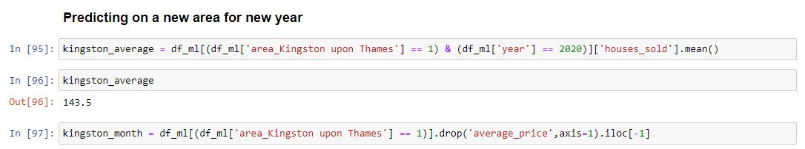

Train test split
Lets start with what we already know and train, test, split our data.
Using sklearn to split data into a training set and a testing set. We do this so that we have something to measure our model against (test set). The data is split 70% training set and 30% testing set. The random state being set to 1 means that the data will be randomised in the same manner each time we run our model (producing roughly same results each time).
Neural Network
Neural networks are essentially an attempt to recreate how the human brain would process thoughts. Let take this back-to-school, biology class. It would help to picture our function of x’s and y in terms of an actual neuron.
Let’s download our ways to think, so we possess some neurons of our own, by importing our modules from tensorflow.keras
A neural network can be thought of many of these neurons being put together. Where our input layers are known as x and our output layers are known as ŷ. The mysterious middle layers that are not known are titled our hidden layers.
A deep neural network is that which contains 2 or more hidden layers. This is what we will build.
Neural networks take in inputs (x), multiply them by weights (w), and add biases to them (b).
This is the concept of an activation function. Essentially there will be no effect upon our model if we do not overcome our bias term b.
If we define our inputs as z = wx + b we can refer to our activation function as f(z)
Lets create our deep neural network. This isn’t too difficult, following best practice by matching the shape of our net to the shape of our data. We won’t add any dropout layers as when testing this it decreased the performance of the model. As you can see we use Rectified Linear Units as our activation function in our layers. We also only want a single point as our output so we define the last point as a single neuron.
This leaves the question of how the data actually flows through the neural net, what is ‘adam’ and why are we adding in a loss parameter (mean squared error error)?
Well, our result is passed through the activation function (reLu) leading to our output.
This output ŷ is the model’s estimation of what it predicts the label to be.
We will need to update the network’s weights and biases in order to adjust the accuracy of the model. We determine how these our updated based upon a cost function. This compares our predictions to our actual values, y_test. This is why we have defined loss as a parameter in our model.
We also define two more variables being: Sr, the input of a single training sample and; Er, the desired output of that training sample. We can then define our cost model as:
To minimise to cost we can think of this in graphical terms. The cost will be minimised where the gradient is zero. Therefore, we want to take smaller and smaller steps as we approach the minimum point to find its exact location. The step size is known as the learning rate.
We will use Adam as our optimiser which does exactly this (2015, Kingma and Ba published their paper: “Adam: A Method for Stochastic Optimization “).

Fit the model
Now that our neural net is ready to go, we can fit the model to our data. Our model we then “think things through” 400 times (epochs) working towards reducing our mean squared error.
Model performance
And here we have it a plot of how our error is reduced over the 400 revolutions of the net. Looks pretty good!
To get a sense of how our model performed we can view a few error metrics provided by sklearn. Looks like our model explained 98.61% of the variance in the data. Not bad! Although to take a reality check here the supreme power of Random Forests has still beaten us here at £24,925 RMSE vs £15,457 RMSE!
If we plot our errors as a distribution around zero we can see we are pretty accurate!
Predictions
We can take this one step further and use our model to predict something. Of course, that’s its purpose after all. We can work on predicting the house price of Kingston for May 2023 assuming the houses sold were similar to that of the current year.
Now that we have set up our data to be the right shape and have the right values we shall put it into our neural net and see what it can tell us!
Our model is predicting
- Actual: May 2021 prices £504,304
- Forecast: May 2023 prices are expected to be £538,698
- Forecast increase: £34,394
And here you have it, one deep neural net complete!